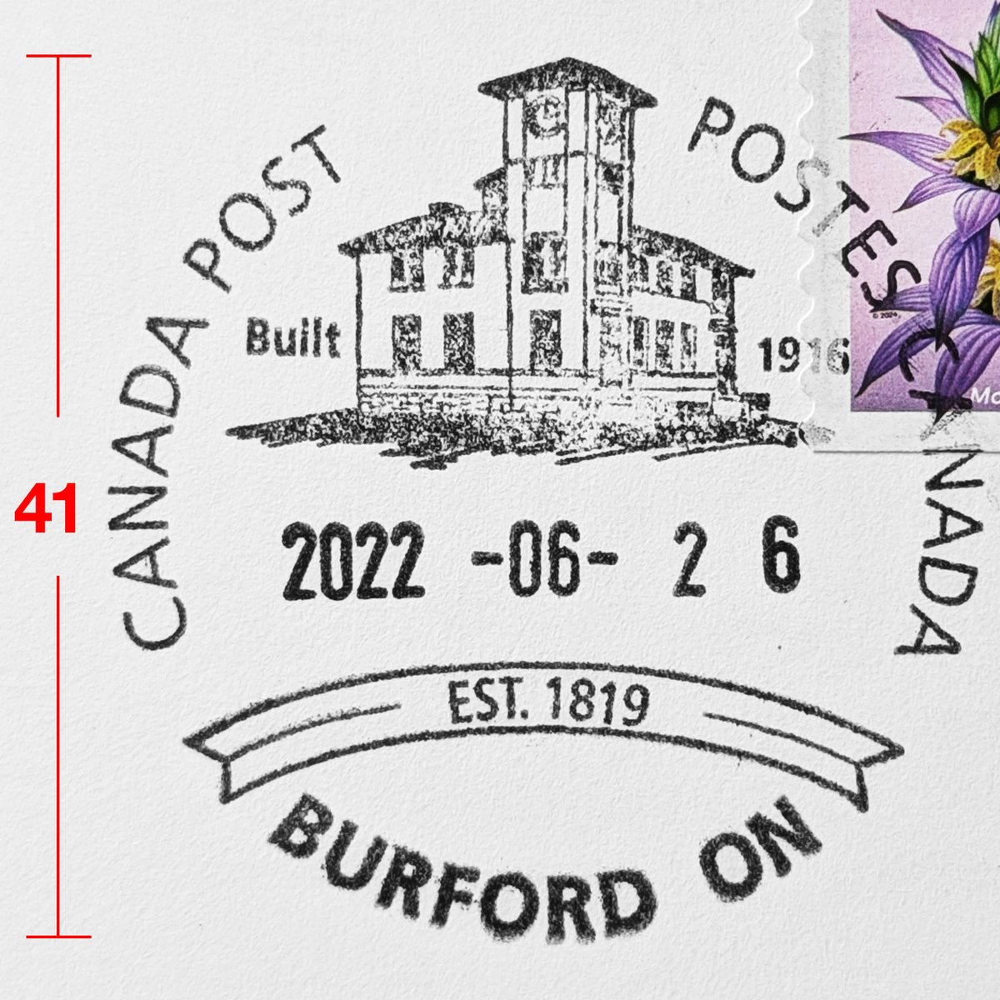

Burford PO pictorial cancel
Built 1916 – EST. 1819
- Status
- Active
- Run dates
- ? to present
- Design
- "Built 1916 / EST. 1819"; building
- Ink colour
- Black
- Designer
- Unknown
- Post office
- Burford PO
11 King St W
Burford, ON
N0E 1A0 - Subjects
- architecture, building
Collect it by mail. Send your stamped covers, with a stamped return envelope, to the post office address above. How to collect pictorial cancels by mail · en français
 Beachville POBaseball
Beachville POBaseball Beachville POPost office
Beachville POPost office Hagersville POFARMERS MARKET / EST 1897
Hagersville POFARMERS MARKET / EST 1897